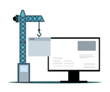

Introducción a CSS
CSS (Cascading Style Sheets) es un lenguaje utilizado para describir la presentación de un documento HTML.
Con CSS, podemos controlar el diseño, la disposición y la apariencia de los elementos en una página web.
Sintaxis de CSS
La sintaxis de CSS está compuesta por selectores y declaraciones.
Un selector apunta al elemento HTML que quieres estilizar. Una declaración es una propiedad y su valor.
/* Ejemplo de sintaxis CSS */
selector {
propiedad: valor;
}
Selectores en CSS
CSS ofrece una variedad de selectores para apuntar a los elementos HTML que queremos estilizar:
- Selector de etiqueta: Selecciona todos los elementos de un tipo específico. Ej:
p { color: red; } - Selector de clase: Selecciona elementos con una clase específica. Ej:
.clase { color: blue; } - Selector de ID: Selecciona un elemento con un ID específico. Ej:
#id { color: green; } - Selector de atributo: Selecciona elementos con un atributo específico. Ej:
[type="text"] { color: purple; } - Selector de pseudo-clase: Selecciona elementos en un estado específico. Ej:
a:hover { color: orange; } - Selector de pseudo-elemento: Selecciona una parte específica de un elemento. Ej:
p::first-line { color: pink; }
Propiedades CSS
Propiedades Relativas a las Fuentes
- font-family: Define la familia de la fuente.
font-family: 'Arial', sans-serif; - font-size: Define el tamaño de la fuente.
font-size: 16px; - font-weight: Define el grosor de la fuente.
font-weight: bold; - font-style: Define el estilo de la fuente (normal, cursiva, etc.).
font-style: italic; - line-height: Define la altura de la línea. Ej:
line-height: 1.5; - text-align: Alinea el texto.
text-align: center; - text-decoration: Define la decoración del texto (subrayado, tachado, etc.).
text-decoration: underline; - text-transform: Controla la capitalización del texto.
text-transform: uppercase;
Propiedades Relativas al Fondo
- background-color: Define el color de fondo.
background-color: lightblue; - background-image: Define una imagen de fondo.
background-image: url('imagen.jpg'); - background-repeat: Define cómo se repite la imagen de fondo.
background-repeat: no-repeat; - background-size: Define el tamaño de la imagen de fondo. Ej:
background-size: cover; - background-position: Define la posición de la imagen de fondo. Ej:
background-position: center;
Otras propiedades CSS
Existen muchas otras propiedades CSS que todavía no hemos comentado, la lista es enorme, es por eso, que lo mejor es que tengáis una lista completa y actualizada de todas las propiedades CSS, consultando la página oficial de la W3C en el siguiente enlace:
Cómo Enlazar HTML y CSS
Para aplicar estilos CSS a un documento HTML, necesitamos enlazar ambos archivos. Hay varias formas de hacerlo:
1. Usando la Etiqueta <link>en el <head>
La forma más común y recomendada es incluir una hoja de estilos externa usando la etiqueta <link> en la sección lt;head>de tu documento HTML. Esto permite mantener el HTML y CSS separados, facilitando el mantenimiento y la gestión de los estilos.
<!DOCTYPE html>
<html lang="es">
<head>
<meta charset="UTF-8">
<meta name="viewport" content="width=device-width, initial-scale=1.0">
<title>Mi Página Web</title>
<link rel="stylesheet" href="styles.css">
</head>
<body>
<h1>Bienvenido a mi página web</h1>
<p>Este es un ejemplo de cómo enlazar HTML y CSS.</p>
</body>
</html>
2. Usando la Etiqueta <style> en el <head>
Otra forma de añadir estilos CSS es mediante la etiqueta <style> directamente en el <head> del documento HTML. Esta técnica es útil para aplicar estilos rápidos o específicos que no justifiquen la creación de un archivo CSS separado.
<!DOCTYPE html>
<html lang="es">
<head>
<meta charset="UTF-8">
<meta name="viewport" content="width=device-width, initial-scale=1.0">
<title>Mi Página Web</title>
<style>
body {
font-family: Arial, sans-serif;
background-color: #f0f0f0;
}
h1 {
color: #333;
}
</style>
</head>
<body>
<h1>Bienvenido a mi página web</h1>
<p>Este es un ejemplo de cómo usar la etiqueta <style> para CSS en el HTML.</p>
</body>
</html>
3. Usando Atributos de Estilo en las Etiquetas HTML
También puedes aplicar estilos CSS directamente a los elementos HTML usando el atributo <style> Esta práctica se conoce como estilos en línea y no se recomienda para grandes proyectos debido a la dificultad para mantener y modificar los estilos.
<!DOCTYPE html>
<html lang="es">
<head>
<meta charset="UTF-8">
<meta name="viewport" content="width=device-width, initial-scale=1.0">
<title>Mi Página Web</title>
</head>
<body>
<h1 style="color: blue;">Bienvenido a mi página web</h1>
<p style="font-size: 16px;">Ejemplo de estilos en línea en HTML.</p>
</body>
</html>
Ejercicios Prácticos
- Crea un archivo HTML que incluya un título y un párrafo.
- Aplica estilos al título y al párrafo usando cada uno de los métodos mencionados (archivo CSS externo, etiqueta <style>, y estilos en línea).
- Reflexiona sobre cuál de estos métodos prefieres y por qué.
El Modelo de Caja en CSS
El modelo de caja es un concepto fundamental en CSS que describe cómo los elementos HTML son representados en la página web.
Cada elemento es una caja que tiene márgenes, bordes, rellenos y contenido.
/* Ejemplo de modelo de caja */
elemento {
width: 100px;
height: 100px;
margin: 10px;
padding: 20px;
border: 1px solid black;
}
Posicionamiento en CSS
El posicionamiento en CSS es crucial para controlar cómo se colocan los elementos en una página web. Existen varios métodos de posicionamiento, cada uno con su propio uso y comportamiento.
1. Posicionamiento Estático (Static)
El posicionamiento estático es el valor por defecto para todos los elementos.
Los elementos con position: static se colocan en el flujo normal del documento, y las propiedades top, right, bottom y left no tienen efecto.
.static-box {
position: static;
width: 200px;
height: 100px;
background-color: lightblue;
}
Consejo: Utiliza el posicionamiento estático cuando no necesites ajustar la posición del elemento de forma específica. Es útil para la mayoría de los elementos en el flujo normal del documento.
2. Posicionamiento Relativo (Relative)
Con position: relative, el elemento se posiciona en relación con su posición original en el flujo del documento. Las propiedades top, right, bottom y left desplazan al elemento desde su posición original.
.relative-box {
position: relative;
top: 20px;
left: 30px;
width: 200px;
height: 100px;
background-color: lightcoral;
}
Consejo: Usa el posicionamiento relativo para ajustar ligeramente la posición de un elemento sin sacarlo del flujo normal del documento. Es útil cuando necesitas un pequeño desplazamiento respecto a su ubicación original.
3. Posicionamiento Absoluto (Absolute)
El position: absolute saca al elemento del flujo normal del documento y lo posiciona en relación con el elemento padre más cercano que tenga un posicionamiento distinto de static. Si no hay tal elemento, se posiciona en relación con el documento.
.absolute-container {
position: relative;
width: 300px;
height: 200px;
background-color: lightgrey;
}
.absolute-box {
position: absolute;
top: 10px;
right: 10px;
width: 150px;
height: 80px;
background-color: lightgreen;
}
Consejo: El posicionamiento absoluto es ideal para colocar elementos en una ubicación específica dentro de un contenedor. Úsalo para elementos flotantes o modales que deben estar en una posición fija dentro de su contenedor padre.
4. Posicionamiento Fijo (Fixed)
El position: fixed posiciona el elemento en relación con la ventana del navegador. El elemento permanece en la misma posición incluso cuando el usuario se desplaza por la página.
.fixed-box {
position: fixed;
bottom: 20px;
right: 20px;
width: 150px;
height: 80px;
background-color: lightpink;
}
Consejo: Utiliza el posicionamiento fijo para elementos que deben permanecer visibles en todo momento, como botones de navegación o barras de herramientas, sin importar el desplazamiento de la página.
5. Posicionamiento Pegajoso (Sticky)
El es una combinación de relative y fixed. El elemento se comporta como relative hasta que se desplaza a una posición específica en la ventana, momento en el cual se comporta como fixed.
.sticky-box {
position: sticky;
top: 0;
width: 100%;
height: 50px;
background-color: lightgoldenrodyellow;
}
Consejo: El posicionamiento pegajoso es útil para elementos como encabezados de secciones que deben permanecer visibles mientras se navega por una sección larga, pero que no deben estar fijos en la pantalla en todo momento.
Ejercicios de posicionamiento
Ejercicio 1: Menú de Navegación Fijo
Descripción: Crea una página con un menú de navegación que permanezca fijo en la parte superior de la página mientras te desplazas hacia abajo.
- Crea una estructura básica de HTML con un menú de navegación en la parte superior.
- Usa position: fixed; para hacer que el menú se mantenga en la parte superior de la página.
- Añade algunos enlaces de ejemplo en el menú y contenido debajo para permitir el desplazamiento.
Ejercicio 2: Caja Flotante en una Esquina
Descripción: Crea una caja que se mantenga en la esquina inferior derecha de la pantalla y permanezca visible al desplazarse.
- Crea una caja con un contenido básico.
- Usa position: fixed; para posicionar la caja en la esquina inferior derecha de la pantalla.
- Ajusta el tamaño y el color de la caja según tu preferencia.
Ejercicio 3: Caja Dentro de un Contenedor
Descripción: Crea un contenedor con posición relativa y dentro de él, coloca una caja con posición absoluta.
- Crea un contenedor con un tamaño específico y posición relativa.
- Dentro del contenedor, añade una caja con posición absoluta.
- Asegúrate de que la caja esté posicionada en una ubicación específica dentro del contenedor.
Ejercicio 4: Encabezado Pegajoso (Sticky Header)
Descripción: Crea un encabezado que se quede pegado en la parte superior de la ventana cuando el usuario se desplaza hacia abajo.
- Crea un encabezado con un tamaño específico y usa
position: sticky; - Ajusta la propiedad
toppara que el encabezado se quede en la parte superior de la ventana. - Añade contenido debajo del encabezado para permitir el desplazamiento.
Ejercicio 5: Diseño de una Tarjeta con Posicionamiento Relativo y Absoluto
Descripción: Diseña una tarjeta con una imagen y texto, y usa position: relative; para la tarjeta y position: absolute; para un elemento dentro de la tarjeta.
- Crea una tarjeta con una imagen de fondo y texto superpuesto.
- Usa
position: relative;en la tarjeta para poder posicionar el texto conposition: absolute; - Ajusta el texto para que esté centrado en la parte inferior de la tarjeta.
Pseudo-clases en CSS
Las pseudo-clases se utilizan para definir el estado especial de un elemento.
- hover: Se activa cuando el usuario pasa el ratón sobre un elemento. Ej:
a:hover { color: red; } - focus: Se activa cuando un elemento recibe el foco. Ej:
input:focus { border-color: blue; } - nth-child(n): Selecciona el n-ésimo hijo de su padre. Ej:
li:nth-child(2) { color: green; } - first-child: Selecciona el primer hijo de su padre. Ej:
p:first-child { font-weight: bold; } - last-child: Selecciona el último hijo de su padre. Ej:
p:last-child { font-weight: bold; } - not(selector): Selecciona todos los elementos que no coinciden con el selector dado. Ej:
input:not([type="text"]) { display: none; }
Definiciones en Función del Contexto
Las definiciones en función del contexto permiten aplicar estilos basados en la posición de los elementos dentro de la estructura HTML.
- Selector descendiente: Selecciona los elementos dentro de un contenedor específico. Ej:
div p { color: blue; } - Selector hijo: Selecciona los elementos que son hijos directos de un contenedor específico. Ej:
div > p { color: green; } - Selector hermano adyacente: Selecciona un elemento que es el siguiente hermano inmediato de otro. Ej:
h1 + p { margin-top: 0; } - Selector hermano general: Selecciona todos los elementos hermanos de un elemento anterior. Ej:
h1 ~ p { color: red; }
Flexbox en CSS
Flexbox, o "Flexible Box Layout", es un sistema de diseño en CSS que permite crear interfaces responsivas y alineadas de manera eficiente. Es especialmente útil para distribuir espacio entre elementos y alinearlos dentro de contenedores, incluso cuando el tamaño de los elementos es dinámico o desconocido.
¿Cómo funciona Flexbox?
El sistema Flexbox consta de dos componentes principales:
- Contenedor flexible (flex container): El elemento padre que contiene a los elementos flexibles.
- Elementos flexibles (flex items): Los elementos hijos que se alinearán y distribuirán según las reglas de Flexbox.
Propiedades Principales de Flexbox
Flexbox cuenta con varias propiedades clave para controlar la distribución y alineación de los elementos flexibles:
- display: flex; o display: inline-flex; Convierte el contenedor en un contenedor flexible.
- flex-direction: Define la dirección en la que se distribuyen los elementos.
- justify-content: Controla la alineación de los elementos a lo largo del eje principal.
- align-items: Controla la alineación de los elementos a lo largo del eje transversal.
- flex-wrap: Permite ajustar los elementos a una nueva línea si no caben en una sola.
- align-content: Controla la alineación de múltiples líneas de elementos flexibles si hay espacio extra.
Ejemplo Práctico de Flexbox
A continuación, se muestra un ejemplo de cómo se puede aplicar Flexbox en un contenedor con varios elementos:
<!DOCTYPE html>
<html lang="es">
<head>
<meta charset="UTF-8">
<meta name="viewport" content="width=device-width, initial-scale=1.0">
<title>Ejemplo Flexbox</title>
<style>
.contenedor {
display: flex;
flex-direction: row;
justify-content: space-around;
align-items: center;
flex-wrap: wrap;
height: 300px;
border: 2px solid #3498db;
}
.item {
background-color: #e74c3c;
color: white;
padding: 20px;
margin: 10px;
font-size: 18px;
}
</style>
</head>
<body>
<div class="contenedor">
<div class="item">Elemento 1</div>
<div class="item">Elemento 2</div>
<div class="item">Elemento 3</div>
<div class="item">Elemento 4</div>
</div>
</body>
</html>
Recursos Adicionales para Aprender Flexbox
Aquí tienes algunos enlaces útiles para estudiar Flexbox con mayor profundidad:
CSS Grid Layout
El CSS Grid Layout es un sistema de diseño en CSS que permite crear estructuras complejas y responsivas de una manera mucho más intuitiva. Mientras que Flexbox se enfoca en la distribución de elementos en un eje (horizontal o vertical), Grid permite trabajar en dos dimensiones (filas y columnas) simultáneamente.
¿Cómo funciona Grid Layout?
El sistema Grid Layout se basa en un contenedor grid que organiza su contenido en una cuadrícula de filas y columnas. Los elementos hijos dentro de este contenedor son los items grid, los cuales pueden ser ubicados en posiciones específicas dentro de la cuadrícula.
Propiedades Principales de Grid Layout
El Grid Layout tiene varias propiedades clave para controlar la estructura y distribución de los elementos:
- display: grid; o display: inline-grid; Convierte un contenedor en un contenedor de cuadrícula.
- grid-template-columns: Define las columnas en la cuadrícula.
- grid-template-rows: Define las filas en la cuadrícula.
- grid-gap: Establece el espacio entre filas y columnas.
- grid-template-areas: Permite organizar áreas específicas de la cuadrícula usando nombres.
- justify-items: Controla la alineación de los elementos dentro de sus celdas a lo largo del eje horizontal.
- align-items: Controla la alineación de los elementos dentro de sus celdas a lo largo del eje vertical.
Ejemplo Práctico de Grid Layout
A continuación, se muestra un ejemplo básico de cómo aplicar CSS Grid para organizar un layout simple:
<!DOCTYPE html>
<html lang="es">
<head>
<meta charset="UTF-8">
<meta name="viewport" content="width=device-width, initial-scale=1.0">
<title>Ejemplo Grid Layout</title>
<style>
.contenedor-grid {
display: grid;
grid-template-columns: repeat(3, 1fr);
grid-template-rows: auto;
grid-gap: 20px;
padding: 20px;
border: 2px solid #2ecc71;
}
.item-grid {
background-color: #9b59b6;
color: white;
padding: 20px;
text-align: center;
font-size: 18px;
}
</style>
</head>
<body>
<div class="contenedor-grid">
<div class="item-grid">Elemento 1</div>
<div class="item-grid">Elemento 2</div>
<div class="item-grid">Elemento 3</div>
<div class="item-grid">Elemento 4</div>
<div class="item-grid">Elemento 5</div>
<div class="item-grid">Elemento 6</div>
</div>
</body>
</html>
Recursos Adicionales para Aprender Grid Layout
Si deseas aprender más sobre Grid Layout, estos enlaces pueden ser útiles:
Ejercicios básicos de CSS
Ejercicio 1: Estilización de Texto
- Crea una página HTML con un párrafo y un título.
- Usa CSS para:
- Cambiar el color del título a un tono de azul.
- Establecer una fuente serif para el título y una fuente sans-serif para el párrafo.
- Ajustar el tamaño del título a 24px y el del párrafo a 16px.
- Aplicar una decoración de subrayado al título y cursiva al texto del párrafo.
- Aumentar el espaciado entre letras del título a 2px.
Ejercicio 2: Estilos de Fondo
- Crea una página HTML con varias secciones (<div>) de contenido.
- Usa CSS para:
- Asignar un color de fondo diferente a cada sección.
- Añadir una imagen de fondo a una de las secciones y hacer que no se repita.
- Ajustar la posición de la imagen de fondo al centro de la sección.
- Establecer la imagen de fondo para que cubra toda la sección (background-size: cover).
Ejercicio 3: Modelo de Caja y Bordes
- Crea una página HTML con varios <div> que contengan texto.
- Usa CSS para:
Ejercicio 4: Posicionamiento de Elementos
- Crea una página HTML con un menú de navegación y un contenido principal.
- Usa CSS para:
- Hacer que el menú de navegación se posicione de manera fija en la parte superior de la pantalla.
- Hacer que el contenido principal tenga un margen superior para no quedar oculto tras el menú.
- Posicionar un <div> con un estilo diferente en la esquina inferior derecha de la pantalla.
- Utilizar z-index para asegurarse de que el menú siempre esté por encima de otros elementos.
Ejercicio 5: Flexbox y Grid Layout
- Crea una página HTML con una galería de imágenes.
- Usa CSS para:
- Crear un contenedor con display: flex y organizar las imágenes en filas.
- Usar justify-content para alinear las imágenes en el centro.
- Cambiar a display: grid y definir una cuadrícula con columnas de tamaño fijo.
- Ajustar el espacio entre las imágenes usando grid-gap o column-gap.
Ejercicio 6: Pseudoclases e Interacción
- Crea una página HTML con un botón y una lista de enlaces.
- Usa CSS para:
- Cambiar el color de fondo del botón cuando el cursor pasa sobre él (:hover).
- Cambiar el estilo del texto de los enlaces cuando se visitan (:visited).
- Aplicar un estilo diferente a los enlaces que están actualmente activos (:active).
- Utilizar :focus para cambiar el estilo del botón cuando se enfoca mediante el teclado.
Ejercicio 7: Bordes y Espaciado
Usa CSS para aplicar estilos a un cuadro de texto. En tu archivo HTML:
- Crea un <div> con texto de tu elección.
En tu archivo CSS:
- Aplica un borde sólido de 2px al <div>.
- Añade un margen externo (margin) de 20px.
- Añade un relleno interno (padding) de 15px.
Ejercicio 8: Estilos de Enlaces
Crea una lista de enlaces en tu archivo HTML y luego aplica los siguientes estilos usando CSS:
- Cambia el color de los enlaces en su estado normal.
- Haz que el enlace cambie de color cuando se pase el ratón por encima (hover).
- Haz que los enlaces visitados tengan un color diferente.
Ejercicio 9: Creación de un Menú Horizontal
En tu archivo HTML, crea una lista no ordenada (<ul>) con varios elementos (<li>) que actúen como enlaces de un menú. Luego, en tu archivo CSS:
- Aplica estilos para que la lista se muestre en línea (horizontalmente).
- Añade un fondo de color a cada elemento del menú.
- Añade espaciado (padding) alrededor de los elementos para hacerlos más grandes.
Ejercicio 10: Diseño de una Tarjeta de Presentación
Crea una "tarjeta de presentación" en HTML usando un <div> contenedor que incluya un título, un párrafo, y una imagen. Luego, en tu archivo CSS:
- Estiliza la tarjeta con un color de fondo, borde redondeado, y sombra (box-shadow).
- Aplica un diseño flexible con la propiedad display: flex; para centrar el contenido.
- Establece un ancho máximo para la tarjeta y centra el contenedor en la página.
CSS Variables (Custom Properties)
Las variables CSS, también conocidas como Custom Properties, permiten almacenar valores y reutilizarlos en tu CSS. Se definen con el prefijo -- y se pueden utilizar mediante la función var().
:root {
--main-bg-color: #3498db;
--main-text-color: #ffffff;
}
body {
background-color: var(--main-bg-color);
color: var(--main-text-color);
}
En este ejemplo, --main-bg-color y --main-text-color son variables que definen el color de fondo y el color del texto, respectivamente.
Ejercicio
Crea una serie de variables CSS para definir los colores de tu sitio web y utilízalas en diferentes elementos (encabezados, párrafos, enlaces, etc.).
Animaciones y Transiciones
Las animaciones y transiciones permiten crear efectos de cambio suave en los elementos del sitio web. Las transiciones se aplican a cambios de estado, mientras que las animaciones permiten secuencias de movimientos más complejas.
Transiciones
Las transiciones controlan la velocidad de cambio de las propiedades CSS.
.button {
background-color: #3498db;
transition: background-color 0.3s;
}
.button:hover {
background-color: #2ecc71;
}
En este ejemplo, al pasar el cursor sobre el botón, el color de fondo cambiará suavemente.
Animaciones
Las animaciones se definen mediante @keyframes, que describe los cambios en un elemento en diferentes etapas.
@keyframes slideIn {
from {
transform: translateX(-100%);
}
to {
transform: translateX(0);
}
}
.element {
animation: slideIn 1s ease-in-out;
}
Este código mueve el elemento desde fuera de la pantalla hacia su posición original.
Ejercicio
Crea una animación para un cuadro de texto que cambie de color y posición cuando el usuario haga clic en él.
Responsive Design con Media Queries
El diseño responsive permite que un sitio web se vea bien en diferentes dispositivos y tamaños de pantalla. Se logra utilizando media queries para aplicar estilos específicos según el tamaño de la pantalla.
@media (max-width: 600px) {
.container {
flex-direction: column;
}
}
@media (min-width: 601px) {
.container {
flex-direction: row;
}
}
En este ejemplo, los elementos dentro de .container se mostrarán en columna para pantallas pequeñas y en fila para pantallas más grandes.
Ejercicio
Desarrolla una página web con un diseño de tres columnas que se convierta en una sola columna en pantallas más pequeñas.
CSS Grid Layout Avanzado
CSS Grid Layout es una poderosa herramienta para crear diseños complejos y flexibles. Permite dividir una página en regiones y definir la relación de tamaño, posición y capa entre sus partes.
.container {
display: grid;
grid-template-columns: 1fr 2fr;
grid-template-rows: auto;
gap: 10px;
}
.header {
grid-column: 1 / 3;
grid-row: 1;
}
.sidebar {
grid-column: 1;
grid-row: 2;
}
.main-content {
grid-column: 2;
grid-row: 2;
}
En este ejemplo, .header ocupa dos columnas, .sidebar ocupa la primera columna, y .main-content ocupa la segunda columna.
Ejercicio
Crea un diseño de página usando Grid Layout con un encabezado, barra lateral, contenido principal y pie de página.
CSS Clipping and Masking
CSS Clipping and Masking permiten mostrar solo partes específicas de un elemento, basándose en una forma o una imagen de máscara.
Clipping
Con la propiedad clip-path, puedes crear formas complejas que determinan qué partes de un elemento se mostrarán.
.clipped {
clip-path: circle(50% at 50% 50%);
}
Este ejemplo crea un clip circular centrado en el elemento.
Masking
La propiedad mask se utiliza para ocultar partes de un elemento, basándose en una imagen de máscara.
.masked {
mask-image: url('mask.png');
}
Este ejemplo aplica una máscara basada en la imagen mask.png.
Ejercicio
Crea un diseño donde una imagen de fondo se recorte en diferentes formas geométricas utilizando clip-path.
CSS Blend Modes
Los modos de mezcla CSS permiten combinar el contenido de los elementos superpuestos de diferentes maneras, creando efectos visuales únicos.
.blended {
background-image: url('image.jpg');
background-blend-mode: multiply;
background-color: rgba(255, 0, 0, 0.5);
}
En este ejemplo, la imagen de fondo y el color de fondo se mezclan usando el modo de mezcla multiply.
Ejercicio
Experimenta con diferentes modos de mezcla en una imagen de fondo y un color superpuesto para crear efectos visuales interesantes.
Introducción a Bootstrap
Bootstrap es un framework de front-end que facilita el desarrollo de sitios web responsivos y móviles. Proporciona una colección de herramientas CSS y JavaScript predefinidas para crear rápidamente interfaces de usuario modernas y atractivas.
Características Clave
- Sistema de cuadrícula flexible (Grid system).
- Componentes de UI como botones, formularios, tarjetas, etc.
- Responsive design y utilidades para distintos tamaños de pantalla.
- Extensibilidad mediante plugins de JavaScript.
Ejemplo Básico
Para utilizar Bootstrap, incluye los enlaces a los archivos CSS y JS en tu proyecto:
<link rel="stylesheet" href="https://maxcdn.bootstrapcdn.com/bootstrap/4.0.0/css/bootstrap.min.css">
<script src="https://code.jquery.com/jquery-3.2.1.slim.min.js"></script>
<script src="https://maxcdn.bootstrapcdn.com/bootstrap/4.0.0/js/bootstrap.min.js"></script>Ejemplo de Uso del Sistema de Cuadrícula
<div class="container">
<div class="row">
<div class="col-sm">
Columna 1
</div>
<div class="col-sm">
Columna 2
</div>
<div class="col-sm">
Columna 3
</div>
</div>
</div>Este código crea una disposición de tres columnas que se ajusta según el tamaño de la pantalla.
Ejercicio
Crea una página de inicio utilizando Bootstrap, que incluya una barra de navegación, una sección de contenido con al menos tres columnas y un pie de página. Experimenta con diferentes componentes de Bootstrap.
Introducción a Sass
Sass (Syntactically Awesome Stylesheets) es un preprocesador CSS que permite usar variables, anidamiento, mixins, funciones y más, para escribir CSS de manera más eficiente y organizada.
Características Clave
- Variables para almacenar valores como colores, fuentes, etc.
- Anidamiento de reglas para una estructura más clara.
- Mixins para reutilizar bloques de código CSS.
- Funciones y operaciones para manipular valores CSS.
Ejemplo Básico
// Definición de variables
$primary-color: #3498db;
$secondary-color: #2ecc71;
// Uso de variables y anidamiento
body {
font-family: Arial, sans-serif;
background-color: $primary-color;
color: white;
.header {
background-color: $secondary-color;
padding: 10px;
}
}
// Mixins
@mixin border-radius($radius) {
-webkit-border-radius: $radius;
-moz-border-radius: $radius;
-ms-border-radius: $radius;
border-radius: $radius;
}
// Uso de mixins
.button {
@include border-radius(5px);
background-color: $secondary-color;
}
Este ejemplo muestra cómo usar variables, anidamiento y mixins en Sass.
Ejercicio
Escribe un archivo Sass que defina una paleta de colores, y utilice mixins para crear botones estilizados y secciones con bordes redondeados. Compílalo a CSS y aplícalo a una página web.
Diseño de un Sitio Web
El diseño de un sitio web efectivo requiere planificación y consideración cuidadosa de varios elementos clave para atraer y retener a los usuarios. A continuación se detallan los pasos importantes:
1. Elección de la Paleta de Colores
La paleta de colores debe reflejar la identidad de la marca y el público objetivo. Herramientas como Coolors o Adobe Color pueden ayudar a crear combinaciones armoniosas.
2. Elección de la Tipografía
Selecciona tipografías que sean legibles y apropiadas para el tono del sitio. Google Fonts ofrece una gran variedad de fuentes gratuitas.
3. Diseño del Mockup
El mockup es un prototipo visual del sitio web. Se puede diseñar usando herramientas como Figma, Sketch o Adobe XD. Es útil para visualizar la estructura y disposición antes de empezar a codificar.
4. Implementación
Una vez aprobado el diseño, se procede a la implementación usando HTML, CSS y JavaScript. Frameworks como Bootstrap pueden acelerar el proceso.
5. Recomendaciones para una Landing Page Atrayente
- Título claro y llamativo.
- Uso de imágenes de alta calidad y elementos visuales consistentes.
- Call to Action (CTA) destacado.
- Navegación sencilla y clara.
- Optimización para dispositivos móviles.
6. Tipo de Imágenes a Utilizar
Usa imágenes relevantes y de alta calidad. Recurre a bancos de imágenes como Unsplash, Pexels, o Shutterstock, y asegúrate de que las imágenes sean coherentes con el mensaje y estilo del sitio.
Ejercicio Final
Diseña y desarrolla una landing page para un producto o servicio ficticio. Define una paleta de colores, selecciona las tipografías adecuadas, crea un mockup y desarrolla la página usando HTML, CSS (puedes usar Sass) y Bootstrap. Asegúrate de que sea responsive y de alta calidad visual.
Bibliografía y Recursos Recomendados
- MDN Web Docs - CSS: Documentación oficial de Mozilla sobre CSS.
- W3Schools - CSS Tutorial: Tutorial interactivo sobre CSS.
- CSS-Tricks: Recursos, guías y trucos sobre CSS.
Libros Recomendados:
- "CSS: The Definitive Guide" - Eric A. Meyer: Una guía completa sobre CSS y su uso en diseño web.
- "Transcending CSS: The Fine Art of Web Design" - Andy Clarke: Un libro que explora el diseño web avanzado con CSS.
- "Responsive Web Design with HTML5 and CSS3" - Ben Frain: Enfoque práctico sobre diseño web responsivo utilizando HTML5 y CSS3.